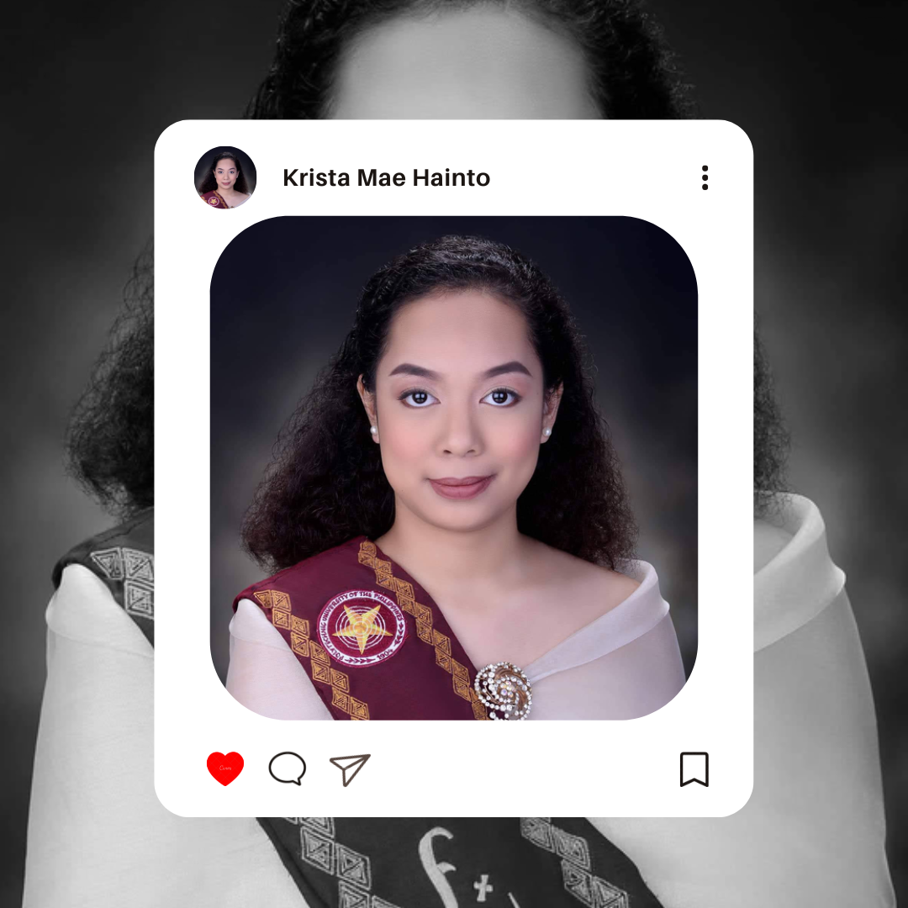

A skilled graphic designer with a passion for
creating stunning visuals that capture
the essence of a brand. With an eye
for detail and a strong background in design theory,
Krista creates beautiful,
unique designs that leave a lasting impression.

Antipolo
National Highschool
ANHS (Junior High School)
2013-2017
Polytechnic
University Of The Philippines
College (BA Broadcasting)
2019-2023
Senior High School (Arts and
Design Program)
2017-2019
Krista Mae Hainto
With Honors
Education
"As a
passionate and driven
graphic designer,
I am constantly seeking opportunities to enhance my skills
grow in my field. I am eager to obtain a job that not only
challenges me, but also allows me to use my creative talents
to their fullest potential. With years of experience in the
field and a keen eye for design, I am confident that I can
contribute to any team and help bring their vision to life.
I am excited at the prospect of working with a company that
values innovation, creativity, and collaboration. I am
constantly pushing myself to learn and develop new skills,
and I believe that a challenging and dynamic work environment
is the best way to do so. My passion for graphic design drives
me to always strive for excellence, and I am committed to
delivering high-quality work that meets the needs of clients
and exceeds their expectations."
Krista Mae Hainto |
Graphic Artist
Candidate
Career Objective
"As a
passionate and driven
graphic designer,
I am constantly seeking opportunities to enhance my skills
grow in my field. I am eager to obtain a job that not only
challenges me, but also allows me to use my creative talents
to their fullest potential. With years of experience in the
field and a keen eye for design, I am confident that I can
contribute to any team and help bring their vision to life.
I am excited at the prospect of working with a company that
values innovation, creativity, and collaboration. I am
constantly pushing myself to learn and develop new skills,
and I believe that a challenging and dynamic work environment
is the best way to do so. My passion for graphic design drives
me to always strive for excellence, and I am committed to
delivering high-quality work that meets the needs of clients
and exceeds their expectations."